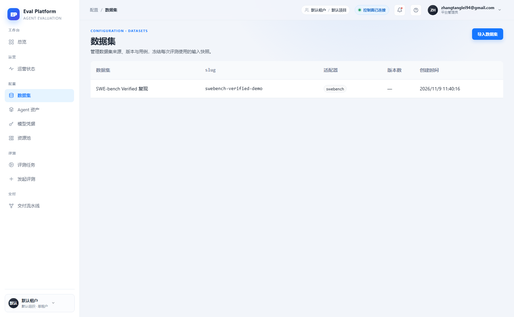
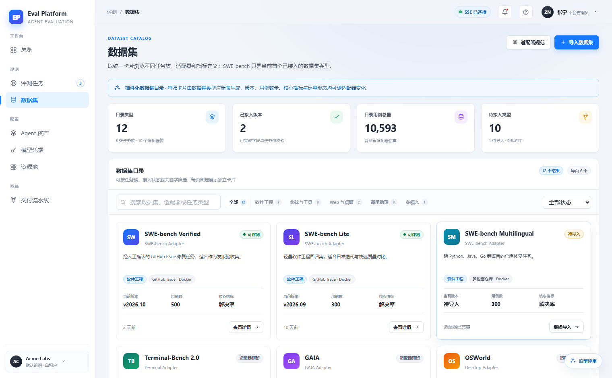
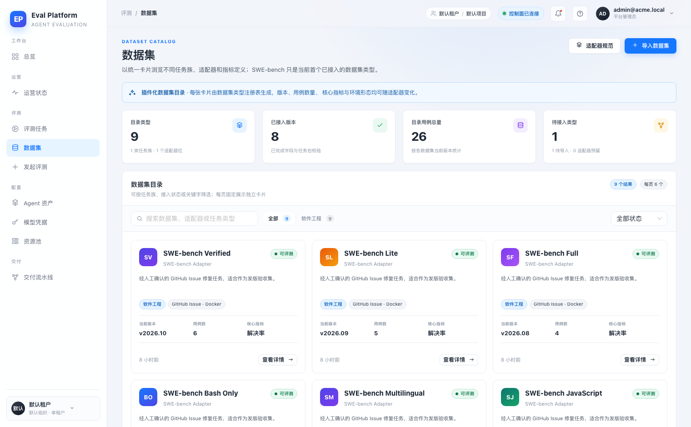
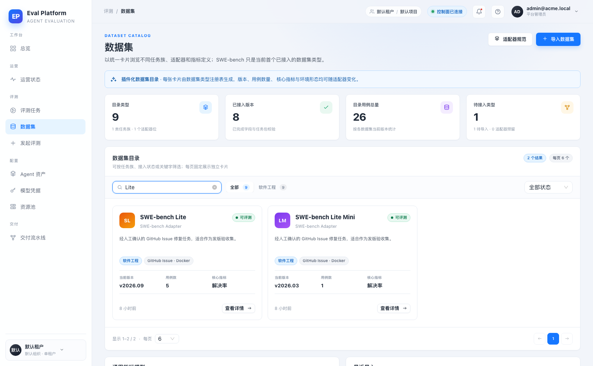
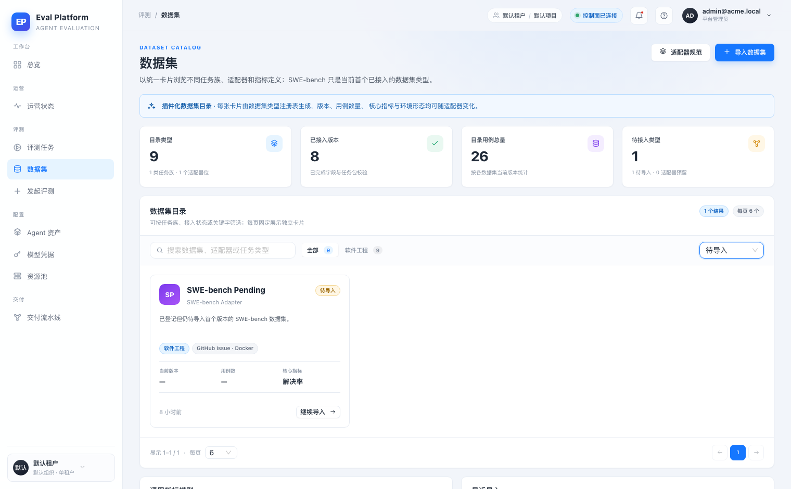
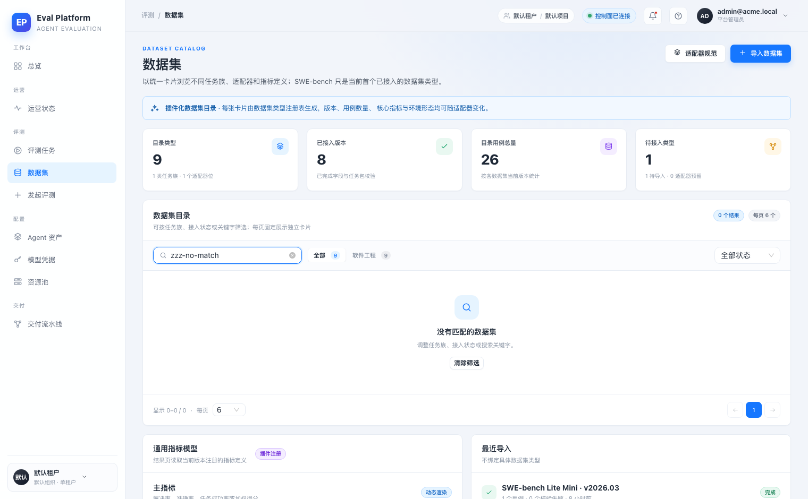
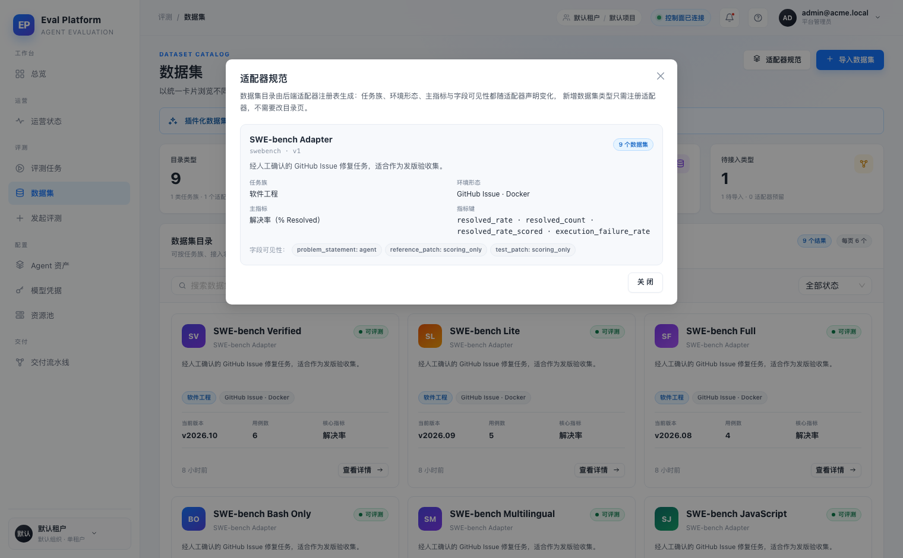
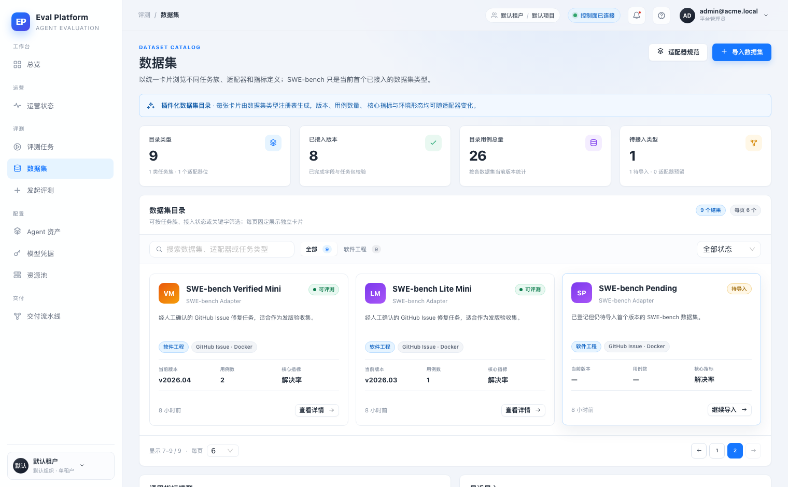
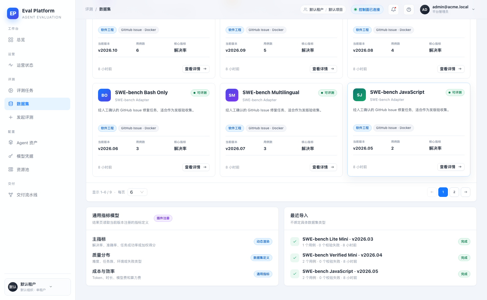

- 应用
- AI Eval Platform 本地开发栈（FastAPI + Vite React）
- 分支
- agent/complete-m5-13-347a99a94dda @ b8ee4d4（base 9bec1dc）
- 数据库
- 一次性 SQLite + 迁移 head + bootstrap 管理员
- 浏览器
- 系统 Chrome headless · 1520×940 · Playwright 驱动
- 数据形态
- 8 个 SWE-bench 切片（6/5/4/3/3/2/2/1 用例）+ 1 条待导入 fixture 行
- 基线
- 改动前线上 /datasets（2026-11-11 审计截图，main@a7126e9）与 M1-02 原型截图
- 账号
- 本地 bootstrap 管理员（密码不写入报告）
- 外部资源
- 无新增云资源；使用 vendored SWE-bench fixture，不触发真实评测或云调用
Browser smoke · 真实登录 / 卡片目录 / 筛选 / 分页 / 适配器规范
M5-13 数据集目录适配器卡片目录 · 集成冒烟报告
在本地开发栈上用 Chrome headless 走通 M5-13 的数据集目录：真实登录后进入 /datasets，确认侧边栏把数据集归入「评测」分组；4 张统计卡与 8 个已导入数据集 + 1 个待导入 fixture 一致；卡片展示任务族、环境形态、当前版本、用例数、核心指标与接入状态；搜索、任务族 Tab、状态筛选、空态清除、每页 6 卡分页和适配器规范弹窗全部可用；最近导入读取真实导入记录。24 个检查点全部通过，未发现需要修复的产品缺陷。
24检查点
0发现缺陷
9证据截图
全部通过后端 / 前端门禁
Environment and Artifact
2026-11-11 · AI Eval Platform · M5-13Scenario Matrix
2 info · 10 pass| # | 场景 | 结果 | 说明 | 证据 |
|---|---|---|---|---|
| 00 | 改动前 /datasets 基线 | BASELINE | 线上目录是 5 列简单表格，无筛选、分页、状态标签或统计卡。 | before-01-live-datasets.png |
| 00b | M1-02 原型 | REFERENCE | 原型为适配器驱动卡片目录、任务族 Tab、搜索、状态筛选与每页 6 卡分页。 | proto-01-datasets.png |
| 01 | 目录卡片与统计卡 | PASS | 统计卡为 9/8/26/1；首屏 6 张卡片；卡片含版本、用例数与核心指标。 | after-01-catalog.png |
| 02 | 导航分组与 ADR 落实 | PASS | 数据集位于「评测」分组；「配置」分组不再包含数据集；面包屑为「评测 / 数据集」。 | after-01-catalog.png |
| 03 | 搜索 | PASS | 搜索 Lite 返回 2 个结果，结果计数与卡片数量一致。 | after-02-search.png |
| 04 | 状态筛选 | PASS | 状态「待导入」只保留 1 张待导入卡片，其他状态卡被过滤。 | after-03-status-filter.png |
| 05 | 空态与清除 | PASS | 无匹配关键字时显示空态；清除筛选恢复 9 个结果。 | after-04-empty.png |
| 06 | 适配器规范 | PASS | 弹窗读取注册表：适配器名、任务族、环境形态、主指标、指标键与字段可见性。 | after-05-adapter-guide.png |
| 07 | 分页 | PASS | 每页 6 卡，第 2 页显示 3 张；页码、上一页/下一页与结果范围一致。 | after-06-pagination.png |
| 08 | 最近导入与通用指标 | PASS | 最近导入显示 3 条真实导入记录，状态与用例/校验数来自 API。 | after-08-bottom.png |
| 09 | 数据来源 | PASS | 卡片字段来自 /api/v1/datasets 与 /api/v1/dataset-adapters，前端未写死 SWE-bench 字段。 | after-01-catalog.png |
| 10 | 浏览器稳定性 | PASS | 数据集页无 console error、无页面运行时异常；登录前 /auth/me 401 为预期探针。 | — |
Issues and Observations
No defects foundNo defects were found.
Evidence
9 screenshots








Automated Coverage Assessment
6 areas reviewed| 区域 | 覆盖 | 结论 | 建议 |
|---|---|---|---|
Conclusion
主路径通过，未发现产品缺陷M5-13 目录在真实登录、真实 API 与真实浏览器下走通卡片字段、统计、筛选、分页、空态、适配器规范与最近导入；导航分组已按 ADR 恢复。
- Before 基线来自 2026-11-11 线上审计截图，不是修改后页面的回放。
- 本地冒烟用 vendored SWE-bench 切片与一条待导入 fixture 行，没有真实云调用或真实评测。
- 适配器预留卡片需要第二个注册适配器才能在产品数据中触发，本次未覆盖该真实数据场景。
- 本次不涉及云资源接入，无需采购或配置新资源。
M5-13 · 数据集目录适配器卡片目录 · 本地开发栈浏览器冒烟